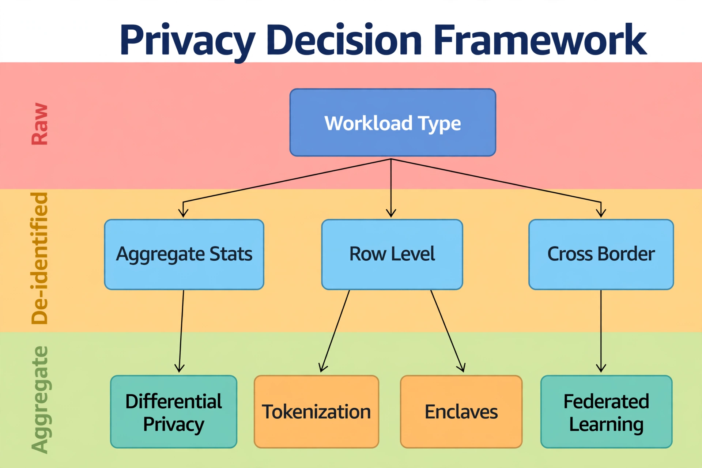

Chapter 36: Privacy-Preserving ML for Regulated Environments
Every machine learning pipeline in this book starts with the same raw material: your production data. That is also where the danger lives. The moment you train a model on real customer records, transaction histories, or patient data, that dataset becomes a regulated artifact — subject to GDPR, HIPAA, PCI-DSS, and whatever sector-specific rules govern your industry. A model trained on unprotected PII can leak that PII through membership inference attacks, prompt extraction, or simply an engineer copying a training file to a laptop. For the DBA, this creates a new responsibility: you are not just the guardian of the database anymore, you are the guardian of every derivative of that database — the feature tables, the training sets, the model weights, and the inference logs.
This chapter gives you a practical toolkit for building ML pipelines that respect privacy from the start: data classification that drives policy, differential privacy for aggregate features, tokenization and de-identification pipelines, federated learning patterns that keep data on-premises, and SQL Server's own confidential computing capabilities. The goal is not to slow down your AI work — it is to make that work defensible when an auditor asks how customer data was protected.
---
Why ML and Privacy Collide
Traditional database security is about controlling access to rows. ML breaks that model in three ways. First, aggregation does not equal anonymization: a "mean transaction value by zip code" feature can re-identify individuals when the group is small, and ML models happily memorize rare training examples — research has repeatedly shown that models can be probed to regurgitate training data. Second, feature stores centralize risk: the curated feature tables you build for training become high-value targets that concentrate sensitive columns in one place. Third, data leaves the building: training pipelines copy data to data lakes, notebooks, and cloud ML services, each copy expanding the blast radius of a breach.
The DBA's answer is defense in depth: classify the data, protect it at rest and in use, minimize what flows into training, and audit everything. SQL Server gives you purpose-built primitives for each layer — and this chapter shows how to wire them into your ML workflows.
---
Step One: Classify Before You Train
You cannot protect what you have not identified. SQL Server's Data Discovery & Classification feature lets you label columns with information types (Credit Card Number, National ID, Email) and sensitivity labels (Highly Confidential, Confidential, General). These labels travel with the column metadata and become the policy input for everything downstream — which columns get masked, which get excluded from feature tables, which require enclave-level encryption.
-- Audit which columns in your database carry sensitivity labels
-- before building any ML feature table
SELECT
s.name AS schema_name,
t.name AS table_name,
c.name AS column_name,
ty.name AS data_type,
il.name AS information_type,
sl.name AS sensitivity_label,
il.rank AS info_type_rank
FROM sys.sensitivity_classifications sc
JOIN sys.tables t ON t.object_id = sc.major_id
JOIN sys.schemas s ON s.schema_id = t.schema_id
JOIN sys.columns c ON c.object_id = t.object_id AND c.column_id = sc.minor_id
JOIN sys.types ty ON ty.user_type_id = c.user_type_id
LEFT JOIN sys.sensitivity_information_types il ON il.information_type_id = sc.information_type_id
LEFT JOIN sys.sensitivity_labels sl ON sl.label_id = sc.label_id
ORDER BY sl.rank DESC, il.rank DESC;
-- Verify Dynamic Data Masking is applied on labeled PII columns
SELECT
s.name AS schema_name,
t.name AS table_name,
c.name AS column_name,
c.masking_function,
CASE WHEN c.is_masked = 1 THEN 'Masked' ELSE 'NOT MASKED' END AS masking_status
FROM sys.masked_columns c
JOIN sys.tables t ON t.object_id = c.object_id
JOIN sys.schemas s ON s.schema_id = t.schema_id;Build a standing rule into your ML workflow: no training extract may include a column labeled Highly Confidential unless it passes through a de-identification stage first. The classification query above becomes a gate in your pipeline — run it before every training data export, and fail the build if a newly added column carries a label the pipeline is not approved to handle. Columns with Dynamic Data Masking applied are safe for analyst queries, but remember that masking only protects interactive sessions; bulk exports with UNMASK permission bypass it, so your export service account must never hold that permission.
---
Differential Privacy for Aggregate Features
Most ML features derived from SQL Server are aggregates: average order value per customer segment, failure rate per server, claim counts per region. Differential privacy adds calibrated noise to these aggregates so that the presence or absence of any single individual cannot be inferred from the result. For feature engineering, a pragmatic approach is to apply noise at the aggregation layer in T-SQL before the features land in the training set.
-- Differentially-private style feature aggregation:
-- suppress small groups and add Laplace noise to counts
-- (epsilon chosen by your privacy budget; smaller = more noise)
DECLARE @epsilon FLOAT = 0.5; -- privacy budget for this query
DECLARE @sensitivity FLOAT = 1; -- one person changes the count by at most 1
WITH segment_stats AS (
SELECT
c.customer_segment,
COUNT(*) AS raw_count,
AVG(o.order_total) AS raw_avg_order
FROM dbo.orders o
JOIN dbo.customers c ON c.customer_id = o.customer_id
WHERE o.order_date >= DATEADD(MONTH, -6, GETUTCDATE())
GROUP BY c.customer_segment
HAVING COUNT(*) >= 50 -- k-anonymity floor: suppress tiny groups
)
SELECT
customer_segment,
-- Laplace noise: -ln(1 - 2*|U|) / epsilon, U uniform(-0.5, 0.5)
CAST(raw_count + (-LOG(1 - 2 * ABS(RAND(CHECKSUM(NEWID())) - 0.5)) / @epsilon)
AS INT) AS dp_count,
raw_avg_order AS avg_order_value -- averages over 50+ rows leak little
FROM segment_stats;The HAVING COUNT(*) >= 50 clause is the k-anonymity floor — it guarantees no feature row describes fewer than 50 individuals, which neutralizes the most common re-identification path. The Laplace noise on counts provides the differential privacy guarantee. Keep a privacy budget ledger: every noisy query consumes epsilon, and the total budget across all queries against a dataset bounds the cumulative leakage. Track it in a table — dataset_name, epsilon_spent, query_hash — and alert when a dataset's budget is exhausted. Once the budget is gone, the dataset must be retired from further aggregate querying until the budget window resets.
---
Tokenization and De-identification Pipelines
For row-level training data — fraud models, churn models, recommendation features — aggregation is not an option. The pattern here is a de-identification pipeline that runs between the source database and the training environment: direct identifiers are replaced with irreversible tokens, quasi-identifiers are generalized, and a mapping table is kept in a separate, tightly controlled vault database for the rare cases where re-identification is legally required.
import pyodbc
import hashlib
import pandas as pd
from datetime import date
VAULT_SALT = None # Loaded from the secure vault at runtime, never hardcoded
def tokenize(value: str, salt: str) -> str:
"""One-way token: deterministic so joins still work, irreversible by design."""
return hashlib.sha256(f"{salt}|{value}".encode()).hexdigest()[:32]
def build_training_extract(conn_str: str, vault_salt: str, as_of: date) -> pd.DataFrame:
conn = pyodbc.connect(conn_str)
df = pd.read_sql("""
SELECT customer_id, email, phone, date_of_birth,
region, signup_channel, total_orders, total_spend
FROM dbo.customers
WHERE is_active = 1
""", conn)
conn.close()
# Direct identifiers -> irreversible tokens (joinable, not reversible)
df['customer_token'] = df['customer_id'].astype(str).apply(
lambda v: tokenize(v, vault_salt))
df['email_token'] = df['email'].apply(lambda v: tokenize(v, vault_salt))
# Quasi-identifiers -> generalize (k-anonymity via binning)
df['age_band'] = (pd.to_datetime('today').year -
pd.to_datetime(df['date_of_birth']).dt.year) // 10 * 10
df['age_band'] = df['age_band'].astype(str) + 's'
# Drop raw identifiers; the vault DB keeps the token map separately
return df.drop(columns=['customer_id', 'email', 'phone', 'date_of_birth'])
# Enforce minimum group size on quasi-identifier combinations
def assert_k_anonymity(df: pd.DataFrame, quasi_cols: list, k: int = 5):
groups = df.groupby(quasi_cols).size()
violators = groups[groups < k]
if not violators.empty:
raise ValueError(
f"k-anonymity violated: {len(violators)} groups smaller than k={k}. "
"Widen the generalization bins and retry."
)Two properties make this pipeline defensible. Deterministic tokens preserve joinability — the same customer maps to the same token across extracts, so you can join features from different sources without ever handling the raw identifier. And the k-anonymity assertion fails the extract loudly rather than silently shipping a re-identifiable dataset. Run assert_k_anonymity as a pipeline gate on every extract; generalization bins (age bands, region rollups) are widened automatically until the assertion passes.
For SQL Server-native masking at query time, combine this with Always Encrypted on the source columns. With Always Encrypted, the database engine never sees plaintext — encryption keys live in the client driver or Azure Key Vault. A data scientist querying through an approved application gets deterministic-encrypted values they can group and join but never read, which is exactly the tokenization property implemented at the storage layer.
---
Federated Learning: Train Locally, Share Models
Sometimes the data cannot move at all — a hospital network where patient records must stay in each facility's SQL Server, or a bank where regional databases sit behind jurisdictional walls. Federated learning inverts the pipeline: instead of centralizing data for training, you distribute the model to the data. Each SQL Server instance trains locally on its own data, and only model updates (gradients or weight deltas) travel back to the coordinator.
The DBA-friendly version of this pattern does not require a federated learning framework. For the common case — a shared model architecture trained per-site and averaged — the workflow is: export the model definition to each site, run training locally via sp_execute_external_script with Python, collect the resulting model binaries into a central registry, and average the parameters (FedAvg) in the coordinator. No row ever leaves its home instance. Each site's training runs inside its own security boundary, under its own audit policy, and the coordinator only ever sees weight matrices.
The practical gotchas: sites must run the same model architecture and feature definitions or averaging produces garbage — enforce this with a shared feature view definition deployed from source control to every instance. Non-IID data across sites (one hospital sees mostly pediatric cases) biases the averaged model; weight each site's contribution by its sample count and monitor per-site validation metrics to detect divergence. And the model updates themselves can leak information, so add differential-privacy noise to the gradients before transmission when the threat model includes a curious coordinator.
---
Confidential Computing: Always Encrypted with Secure Enclaves
Always Encrypted with secure enclaves is SQL Server's answer to the hardest privacy problem: computing on encrypted data without ever exposing plaintext to the database engine, the OS, or the DBA. In Azure SQL Database (and SQL Server 2019+ with enclave attestation), you can run rich computations — pattern matching, range queries, and increasingly ML-adjacent operations — inside a protected enclave where even a sysadmin with full server access cannot observe the data.
For ML pipelines, the enclave pattern is: sensitive columns stay Always Encrypted; feature extraction queries that need range or comparison operations run inside the enclave; the query results that leave the enclave are already aggregated or tokenized. The DBA configures the enclave and attestation policy but never holds the column master keys — those live in Azure Key Vault or a local HSM under the data owner's control. This gives you a clean separation of duties to show an auditor: the people who operate the infrastructure provably cannot read the data it processes.
-- Verify enclave-enabled columns and attestation configuration
SELECT
c.name AS column_name,
t.name AS table_name,
cek.name AS column_encryption_key,
CASE c.encryption_type
WHEN 1 THEN 'Deterministic (joinable/groupable)'
WHEN 2 THEN 'Randomized (strongest, no operations)'
END AS encryption_type,
CASE WHEN c.is_hidden = 0 THEN 'Visible' ELSE 'Hidden' END AS visibility
FROM sys.columns c
JOIN sys.tables t ON t.object_id = c.object_id
JOIN sys.column_encryption_keys cek
ON cek.column_encryption_key_id = c.column_encryption_key_id
WHERE c.encryption_type IS NOT NULL;
-- Confirm which principals can access the column master keys
-- (keys live outside SQL Server; this documents the trust boundary)
SELECT name AS cmk_name, key_store_provider_name, key_path
FROM sys.column_master_keys;Use deterministic encryption for columns you need to join or group in feature queries, and randomized encryption for everything else. The enclave extends deterministic encryption with safe range operations — without it, range predicates on encrypted columns fail. Document the attestation URL and enclave type in your runbook; if attestation fails, queries against enclave columns fail closed rather than falling back to plaintext processing, which is exactly the behavior you want.
---
Governing ML Data Access: RLS and Audit
The final layer is access governance on the feature store itself. Row-Level Security ensures that a data scientist building a regional model only sees their region's rows, and SQL Server Audit records every access to labeled columns so you can prove who touched training data and when.
-- Row-Level Security on the ML feature store: scientists see only their region
CREATE SCHEMA ml AUTHORIZATION dbo;
GO
CREATE FUNCTION ml.fn_region_filter(@region AS sysname)
RETURNS TABLE
WITH SCHEMABINDING
AS RETURN (
SELECT 1 AS access_result
WHERE @region = CAST(SESSION_CONTEXT(N'user_region') AS sysname)
OR IS_MEMBER('db_owner') = 1
);
GO
CREATE SECURITY POLICY ml.region_policy
ADD FILTER PREDICATE ml.fn_region_filter(region)
ON ml.customer_features
WITH (STATE = ON);
GO
-- Audit all access to the feature store for the compliance trail
CREATE SERVER AUDIT ml_feature_access_audit
TO FILE (FILEPATH = 'D:\Audit\', MAXSIZE = 100 MB)
WITH (ON_FAILURE = FAIL_OPERATION);
GO
CREATE DATABASE AUDIT SPECIFICATION ml_feature_access_spec
FOR SERVER AUDIT ml_feature_access_audit
ADD (SELECT ON ml.customer_features BY dbo)
WITH (STATE = ON);
GO
ALTER SERVER AUDIT ml_feature_access_audit WITH (STATE = ON);Pair the audit with a retention policy that matches your regulatory window — HIPAA expects six years of audit history, PCI-DSS one year with three months immediately available. Ship audit files to immutable storage so the trail survives even a compromised database server. When the auditor asks "who accessed the training features for the churn model in Q2," the answer is a query, not a scramble.
---
Putting It Together: A Privacy Decision Framework

Read it top to bottom. Start with the blue Workload Type box and be honest about what you're actually doing: Aggregate Stats, Row Level, or Cross Border work each demand different controls. The three background bands are the trust zones your data moves through — Raw at the top where nothing is safe to share, De-identified in the middle, Aggregate at the bottom where the output can leave the building. Each branch lands on the control that fits: differential privacy for aggregates, tokenization or enclaves for row-level work, federated learning when data can't cross a border at all. The key insight: privacy isn't one technique, it's a routing decision — the wrong control for the workload is either a breach waiting to happen or security theater that blocks legitimate analysis.
Not every ML workload needs every control. Use this framework to pick the right protections for each pipeline:
| Workload | Primary control | Supporting controls |
|----------|-----------------|---------------------|
| Aggregate reporting features (counts, means by segment) | Differential privacy + k-anonymity floors | Classification labels, audit |
| Row-level training extracts (churn, fraud) | Tokenization pipeline with k-anonymity gate | DDM on source, RLS on feature store |
| Cross-jurisdiction training | Federated learning (data never moves) | Shared feature definitions, DP on gradients |
| Ad-hoc analyst queries on PII | Dynamic Data Masking + classification | Audit, least-privilege service accounts |
| Compute on encrypted columns | Always Encrypted + secure enclaves | Key Vault / HSM key custody, attestation |
The common thread: privacy is enforced in the pipeline and the platform, not in a policy document. Every control above is a query, a function, or an audit specification — things the DBA owns and can demonstrate. When privacy is code, it is testable, reviewable, and repeatable. When it is a promise, it is none of those.
---
Key Takeaways
QueryOptimizer — Self-Hosted SQL Performance Workbench
EXPLAIN visualizer · Index advisor · Slow query dashboard · SQL Server
Test yourself on this chapter
5 questions · instant scoring · explanations included